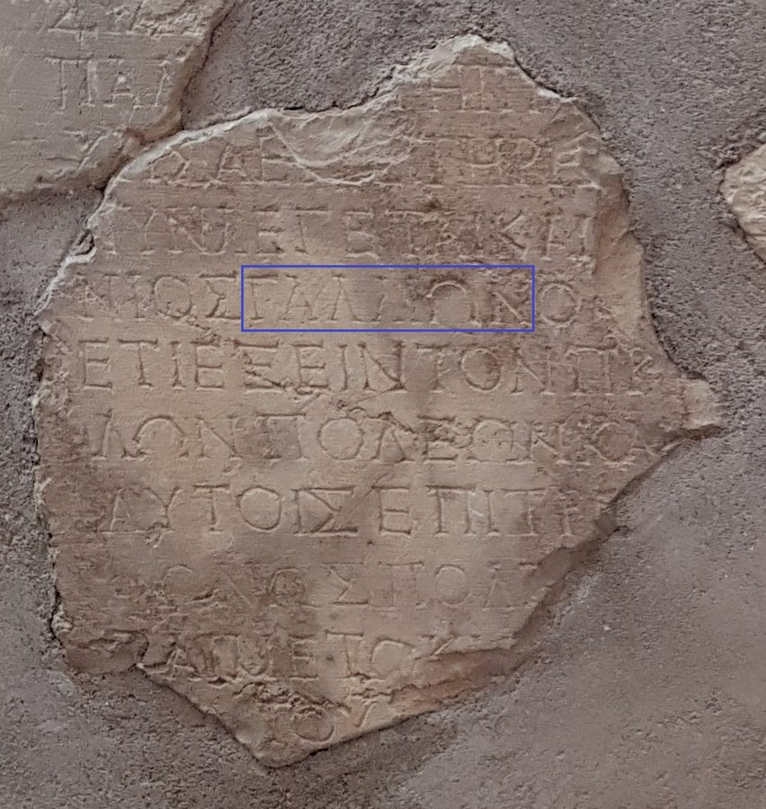

Cuándo
verano 51 – verano 52Galión, procónsul · cronología TNM
52-53 e.c.otra propuesta · «algunos eruditos»
otoño 50 – primavera 52Pablo en Corinto
Usamos la fecha de Perspicacia. La otra propuesta se ve en gris en la línea de tiempo, con su fuente, y no mueve el cursor.
Nivel 1 · Biblia y wol.jw.org
Galión, procónsul de Acaya, rechaza la acusación contra Pablo.
Nota de estudio · «procónsul»
LeerAcaya dependía del Senado de 27 a.e.c. a 15 e.c. y otra vez desde 44 e.c.: el título es exacto.
Perspicacia · «Galión»
LeerFecha del proconsulado a partir de la inscripción de Delfos.
Las tres, comprobadas el 27-09-2026
Proponer una correcciónHistorial del dato
Nivel 2 · Arqueologíaapoya; nunca corrige al nivel 1

Hallazgo
Inscripción de Galión · DelfosFoto: Gérard · CC BY-SA 4.0 · Wikimedia Commons · recuadro del autor
- Qué es
- Fragmentos de una carta del emperador Claudio que nombra al procónsul Galión
- Fecha
- Aclamación 26 de Claudio: probablemente primera mitad de 52 e.c.
- Dónde
- Delfos, a unos 70 km de Corinto
Coordenadas: OpenBible.info · CC BY 4.0 · sólo el punto
Sin verificar e inciertos
Fecha del juicio
Entre el verano de 51 y la primavera de 52. Cálculo nuestro: ninguna fuente lo dice así.
¿El mismo Erasto?
Un pavimento de Corinto (1929) nombra a un Erasto. No se sabe si es el de
Ro 16:23.